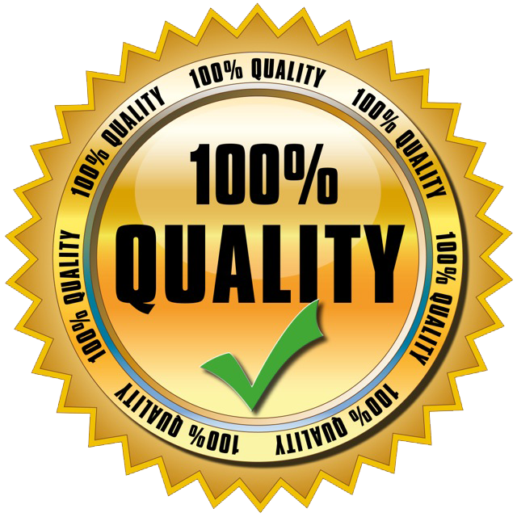

A fejlesztés során HTML, CSS és JavaScript segítségével építettem fel az oldalt, külön figyelmet fordítva a részletekre. Többször újraterveztem bizonyos elemeket, finomhangoltam a dizájnt, a színeket, a térközöket és az animációkat, hogy minden összhangban legyen. Fontos volt, hogy az oldal ne csak működjön, hanem vizuálisan is kiemelkedő legyen.

A maximalizmusom végig meghatározta a munkafolyamatot. Sokszor visszaléptem egy-egy korábbi verzióhoz, hogy még jobbá tegyem az adott részt. Nem hagytam félkész megoldásokat, minden apró részletet addig javítottam, amíg elégedett nem voltam vele. Ez a hozzáállás jelentősen megnövelte a ráfordított időt is: a projekt elkészítése emiatt nem túlzás 100+ munkaórát is igénybe vett.
Külön figyelmet fordítottam arra is (föként saját meggondolatlanságom révén), hogy az oldal reszponzív legyen, tehát különböző eszközökön – például mobilon – is megfelelően jelenjen meg. Emellett a GitHub használatával folyamatosan mentettem a munkámat, így a fejlődés minden lépése nyomon követhetővé vált.